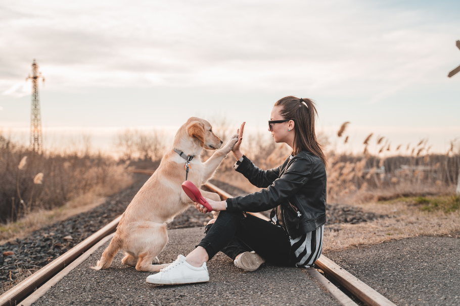

Medicina preventiva, urgencias y especialidades con el mejor equipo de Rancagua.
Agendar CitaAtención integral para el bienestar de tu mascota
Chequeos preventivos, diagnóstico de enfermedades y control de peso.
Calendario completo de vacunas y desparasitación interna/externa.
Cortes de raza, baños sanitarios y limpieza de oídos y uñas.

Pasión y dedicación por los animales desde 2009.
Fundado en el año 2009 por Kevin Sosa, un hombre quien ama a los animales de todas las especies y a quienes les da cariño y los trata con delicadeza. Se dice que tiene un don con los animales y junto a su familia y amigos decidió abrir una veterinaria, y su cariño y atención se ha pasado de generación en generación.
Nuestro compromiso es entregar un servicio de excelencia, contando con las mejores herramientas para exámenes y diagnósticos rápidos y precisos para que su mascota quede como nueva.